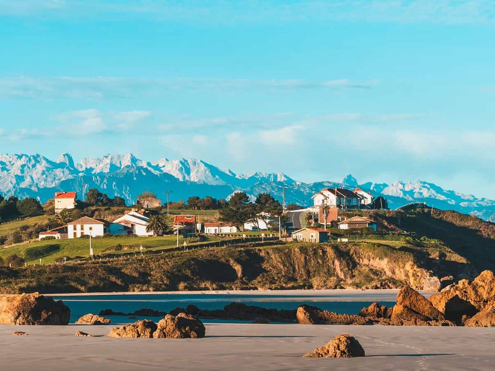
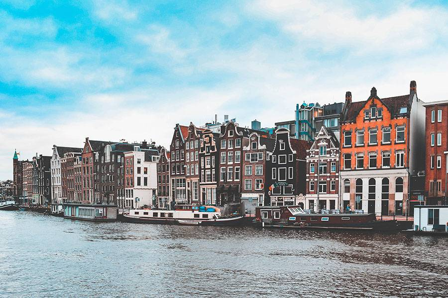
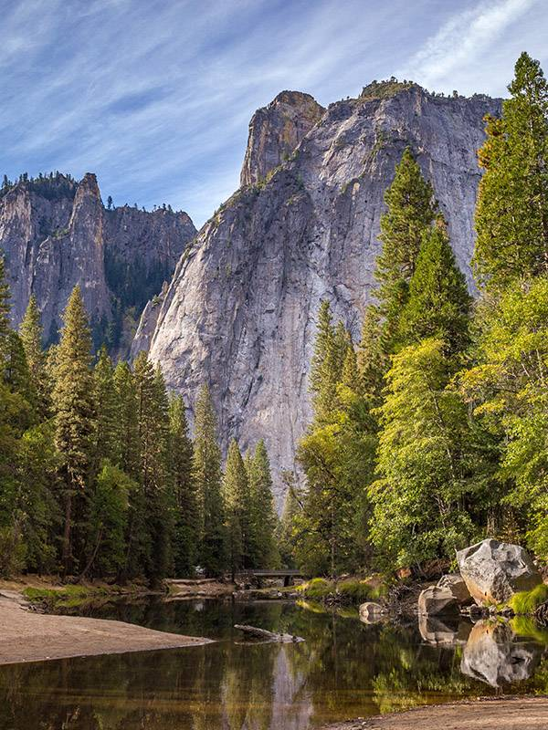

Sitting at the edge of a canyon at sunrise
I arrived forty minutes before sunrise, which in practice meant I arrived in the dark, following a thin flashlight beam along a trail I couldn’t see. The cold was a…
Stories, notes and photographs from trips that were never in a hurry.
I arrived forty minutes before sunrise, which in practice meant I arrived in the dark, following a thin flashlight beam along a trail I couldn’t see. The cold was a…

We had no itinerary for the week, only a rented car and a rule: no alarm clocks. Mornings started with coffee on a terrace above the water and ended wherever the road…
Temples are easiest to appreciate when you stop trying to see all of them. We picked one lake and returned to it three evenings in a row, just to watch the colour…

Amsterdam in November is not the city of the brochures. It rains a lot, the light fades by half past four, and the canals look like polished slate. I think it’s…
It’s hard to write about a place that has been photographed ten million times. So I didn’t try to take the famous photo; I took a walk…

Day one: too many people, too many cars. We drove in a loop, parked, and walked away from the main road. The valley immediately felt…